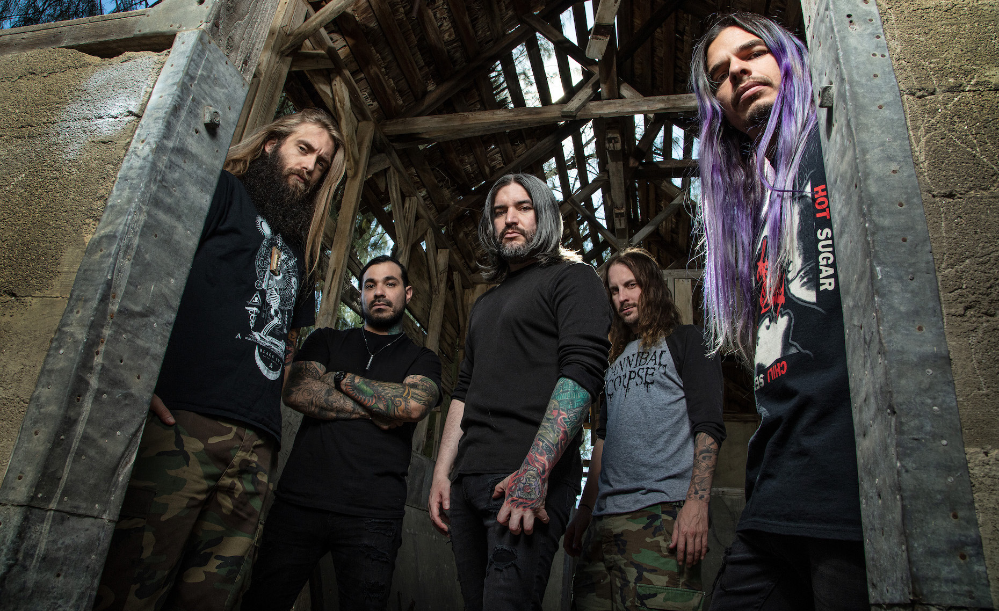

★ Metal Bands ★
Meshuggah
About Meshuggah:
A Swedish extreme metal band, formed in 1987. The bands lineup consits of Jens Kidman for lead vocals, Fredrik Thordendal for lead guitar, Marten Hagstrom for rhythm guitarist, Tomas Haake for drums, and Dick Lovgren for bassist. Currently my favourite song by them is Bleed.
Kublai Khan TX
About Kublai Khan:
An American metal band, formed in 2009. The bands lineup consits of Matt Honeycutt for lead vocals, Nolan Ashley for lead guitar, Isaac Lamb for drums, and Eric English for bassist. Currently my favourite song by them is Self-Distruct.
Suicide Silence
About Suicide Silence:
An American Deathcore band, formed in 2002. The bands lineup consits of Eddie Hermida and for lead vocals, Chris Garza and Mark Heylmun for guitar, Ernie Iniguez for drums, and Dan Kenny for bassist. Currently my favourite song by them is Unanswered.
